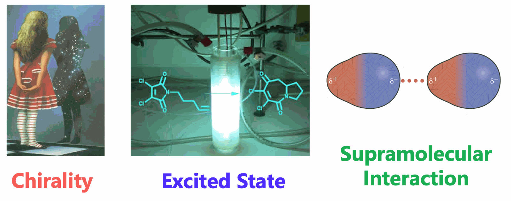
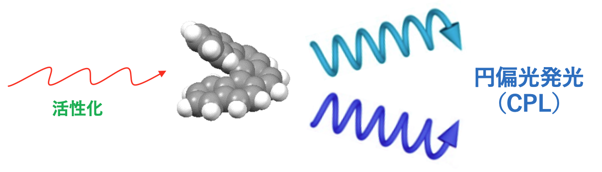
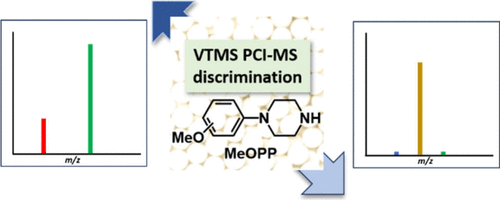
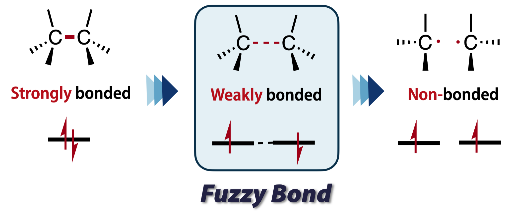
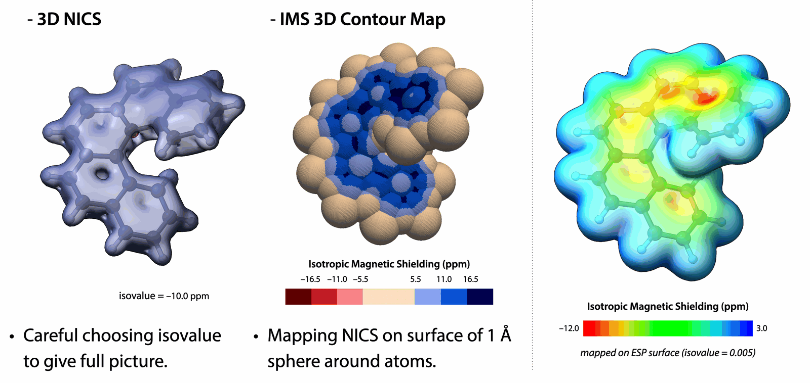

Research
研究内容
励起状態キラリティー
Excited State Chirality

励起状態キラリティーは，光反応および光物理において極めて重要な役割を果たす．従来の方法に加え，超分子相互作用を含む新しい戦略を通じて，非対称光反応の制御を可能にする．さらに，円二色性や円偏光発光といった光学的性質を，材料科学の観点から構造―物性相関として解明することも含まれる．これを実現するためには，分子の配座，エネルギー，動的挙動や諸物性に関する精密な励起状態計算が不可欠であり，加えて人間の直観（ときに常識にとらわれない直観）が大きな力を発揮する．
This concept plays a crucial role in photoreactions and photophysics. It encompasses the control of asymmetric photoreactions through both conventional and emerging strategies, including supramolecular interactions. Additionally, it involves elucidating the structure-property relationships of circular dichroism and circularly polarized luminescence from a materials perspective. Achieving this requires highly accurate excited state computations regarding conformation, energy, dynamics, and property calculations, along with human (and sometimes unconventional) intuition.
キラル発光と不斉光反応
Chiral Luminescence and Asymmetric Photoreactions

本研究室では「光反応」「キラリティー」および「分子間相互作用」の3つのテーマの下，基底状態ならびに励起状態での分子間相互作用の理解とその効果的な利用を目指し，キラル基礎物性の解析，相互作用による物性変化，光励起状態における反応制御法の開発などを中心に，新しい領域横断的な学問領域である分子相関化学に関する研究を行っています．例えば，(1) 熱反応では達成困難な、励起波長による生成物選択性の制御に関する研究；(2) 短寿命な励起状態における、弱い分子間相互作用や超分子相互作用による立体制御と高生成物選択性の達成；(3) 温度、圧力、溶媒極性などの外部因子に鋭敏なキラル光化学のメカニズム解明とこれを用いた新しい不斉合成法の開発．
Our laboratory’s research centers on three themes: photochemical reactions, chirality, and intermolecular interactions. We aim to understand and harness intermolecular interactions in both the ground and excited states. Within the emerging interdisciplinary field of molecular interaction chemistry, our work focuses on characterizing the fundamental physical properties of chiral systems, investigating changes in physical properties arising from molecular interactions, and developing methods to control reactions in photoexcited states. Specific research topics include: (1) Controlling product selectivity by varying the excitation wavelength to achieve outcomes that are difficult to obtain through thermal reactions. (2) Achieving stereochemical control and high product selectivity in short-lived excited states through weak intermolecular and supramolecular interactions. (3) Elucidating the mechanisms of chiral photochemical reactions that are highly sensitive to external factors such as temperature, pressure, and solvent polarity, and applying this understanding to develop new methods for asymmetric synthesis.
Dr. Tsunoi
化学イオン化質量分析による異性体識別
Isomer Discrimination by Chemical Ionization Mass Spectrometry

質量分析計は，構造解析・分子量の決定に利用される．また，質量分析計はGCやLCなどの分離装置と組み合わせることによって，高感度な検出器として用いられることも多い．質量分析は構造解析によく使われるが，異性体の質量スペクトルは非常によく似ており，異性体をマススペクトルで識別するのは困難である．GC-MSやLC-MSでも異性体の識別はタンデム質量分析を用いたり，保持時間で識別したりすることが多い．
通常，GC-MSのイオン化には電子イオン化や化学イオン化が用いられる．化学イオン化質量分析（CI-MS）はメタン，イソブタン，アンモニアなどの試薬ガスを使って分析対象物質をイオン化する．我々は，試薬ガスとしてケイ素化合物を使い，一般に識別が困難な異性体の分析を行っている．ケイ素化合物から生成するケイ素カチオン特有の反応，また付加イオンのタンデム質量分析により薬物異性体の識別を検討している．
Mass spectrometers are used for structural analysis and determination of molecular weight. They are also often used as highly sensitive detectors when combined with separation devices such as GC or LC. Mass spectrometry is commonly used for structural analysis, but the mass spectra of isomers are very similar, making it difficult to discriminate them. Even with GC-MS and LC-MS, isomers are often discriminated using tandem mass spectrometry or retention time.
Typically, electron ionization or chemical ionization are used for ionization in GC-MS. Chemical ionization mass spectrometry (CI-MS) typically uses reagent gases such as methane, isobutane, and ammonia to ionize the analyte. We use silicon compounds as reagent gases to analyze isomers that are generally difficult to discriminate. We are investigating the differentiation of drug isomers using the specific reactions of silicon cations produced from silicon compounds and tandem mass spectrometry of the adduct ions.
ファージボンドの化学
Fuzzy Bond Chemistry

私たちは，「結合」と「非結合」の境界領域に存在する，共有結合よりはるかに弱い電子間相互作用を「ファージボンド（あいまいな結合）」と捉え，その理解と制御に取り組んでいる．典型例である開殻一重項ジラジカロイドは，狭いバンドギャップ，近赤外吸収・発光，非線形光学応答，レドックス応答性などを示す．我々は，ファージボンドを設計原理とする次世代機能性π電子材料の創出を目指す．
Chemical bonds are strong, well-defined connections between atoms. Yet the boundary between "bonded" and "non-bonded" turns out to be a surprisingly rich territory. We study "fuzzy bonds", interactions far weaker than ordinary covalent bonds, such as the faint through-space coupling between two unpaired electrons held close together. Singlet diradicaloids are the typical prototype, whose electronic structure lies somewhere between a closed-shell molecule and a pair of free radicals. This character gives rise to properties that ordinary closed-shell systems simply cannot offer, such as narrow HOMO–LUMO gaps, near-infrared (NIR) absorption and emission, large nonlinear optical responses, and redox-switchable behavior. Our goal is to understand and control these weak electron–electron interactions, and to establish fuzzy bonding as a design principle for next-generation functional π-electron materials.
計算手法と解析ツールの開発
Computational Method & Tool Development

計算化学は，実験研究に欠かせない存在となっている．私たちは，使いやすいソフトウェアツールの開発および新たな計算手法の開発に取り組んでいる．標準的な手法では十分に捉えることが難しい複雑な分子系を対象に，その電子状態や性質を記述・解析・予測するための手法を考案している．
Computational chemistry has become an indispensable partner to experiment, yet powerful analyses are often locked behind steep technical barriers. One pillar of our work is the development of user-friendly software tools that make advanced electronic-structure analysis and visualization accessible to a broad community of chemists, from students to experimentalists, so that computation can be used routinely alongside the bench. The other pillar is the development of new computational methods: we devise approaches for describing, analyzing, and predicting the electronic structures and properties of complex molecular systems that are difficult to capture with standard techniques.